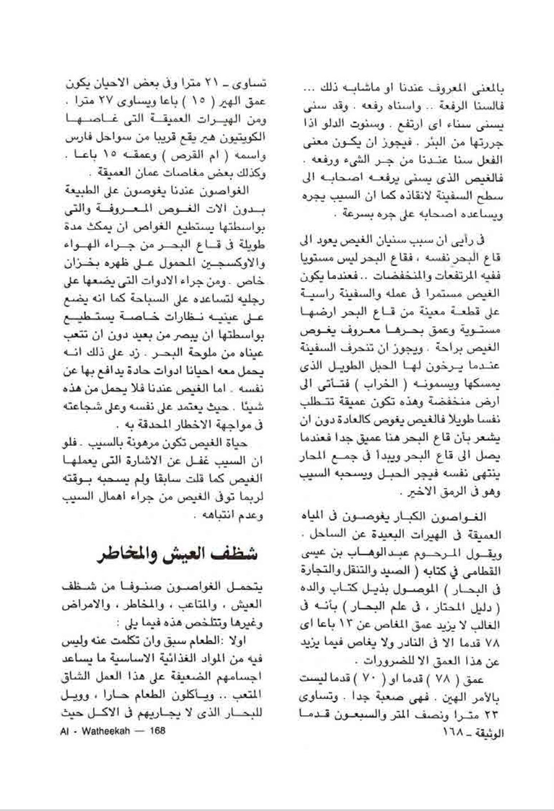

July 1985 · Magazine pages, Al-Watheeka, issue 7, year 4, Shawwal 1405 AH (July 1985), Historical Documents Center, Bahrain, pages 160, 168 and 188
Al-Watheeka, 1985: Abdulwahab bin Eissa Al-Qatami’s book quoted on pearl diving
What it is
A study of pearl diving in Bahrain quotes «the late Abdulwahab bin Eissa Al-Qatami» and his book Al-Sayd wal-Tanaqqul wal-Tijara fil-Bihar, appended to his father’s Dalil Al-Muhtar fi ‘Ilm Al-Bihar, three times. 1. Page 160: on the pearl banks (hirat), which stretch from Kuwait to the Strait of Hormuz along the Arab coast (his page 208). 2. Page 168: the banks are usually no deeper than 13 ba‘ (78 feet). 3. Page 188: his worked example of how a diving ship divides its season’s earnings among divers, haulers and the ship (his page 213).
Why it matters
Shows Abdulwahab Eissa Al-Qatami’s own book on the sea used as an authority in the Arabian Gulf, and confirms it was published with Dalil Al-Muhtar.
Page copies




Sources
Al-Watheeka, issue 7, year 4, Shawwal 1405 AH (July 1985), Historical Documents Center, Bahrain, pages 160, 168 and 188
How this text was made: The title and author of the article are not on the pages sent. Page 135 names Al-Qatami the classical Arab poet, not our family, so it is not shown.
Open in the interactive site